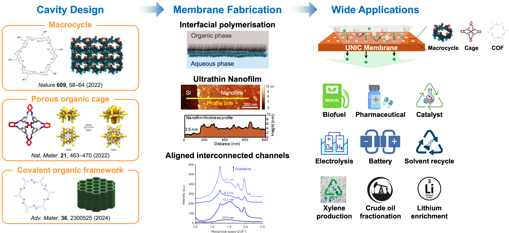

Research Area
Our research covers cavity design... Click below to find out more!

Understanding Our Research Approach
Our research integrates cavity design, membrane fabrication, and application strategies to tackle critical energy and environmental challenges. The image illustrates the full pipeline from macrocyclic structures to membrane deployment and wide-ranging industrial applications.
We engineer highly selective membranes using interfacial polymerization, enabling breakthroughs in pharmaceutical processing, biofuel production, catalysis, and separation technologies.